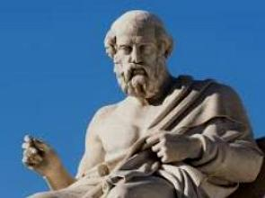
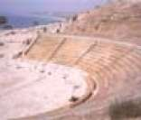

A Grécia é um país do sudeste da Europa com milhares de ilhas espalhadas pelos mares Egeu e Jônico. Bastante influente na antiguidade, a nação é considerada o berço da civilização ocidental. Atenas, sua capital, conserva monumentos como a Acrópole, do século V a.C., onde fica o templo Partenon. A Grécia também é conhecida por suas praias, como Santorini, com suas areias escuras, e os festivos complexos hoteleiros de Míconos.
Extensão
População
Densidade Demográfica
131.957 km²
10,43 milhões (2022)
84,5 hab/km²
Moeda
PIB
Principal fonte de renda
Euro
217,6 bilhões USD (2022)
Indústrias, finanças, turismo e agricultura
Cultura
A Grécia Antiga é considerada pelos historiadores como uma civilização de grande esplendor cultural. Os gregos desenvolveram a filosofia, as artes, a tecnologia, os esportes e muito mais. Tamanha era a importância desta cultura, que os romanos, ao invadir a Península Balcânica (localizada no Sudeste da Europa), não resistiram e beberam nesta esplêndida fonte cultural. Vejamos os principais elementos da cultura grega.

A cidade de Atenas foi palco de grande desenvolvimento filosófico durante o Período Clássico da Grécia (século V AC). Os filósofos gregos pensavam e criavam teorias para explicar a complexa existência humana, os comportamentos e sentimentos. Podemos destacar como principais filósofos gregos Platão e Sócrates. Podemos citar também Tales de Mileto, importante filósofo, matemático e astrônomo da Grécia Antiga.
Os gregos eram apaixonados pelo teatro. As peças eram apresentadas em anfiteatros ao ar livre e os atores representavam usando máscaras. As comédias, dramas e sátiras retravam, principalmente, o comportamento e os conflitos do ser humano. Ésquilo e Sófocles foram os dois mais importantes escritores de peças de teatro da Grécia Antiga.

A cidade de Atenas é considerada o berço da democracia. Os cidadãos atenienses (homens, nascidos na cidade, adultos e livres) eram aqueles que podiam participar das votações que ocorriam na Ágora (praça pública). Decidiam, de forma direta, os rumos da cidade-estado.